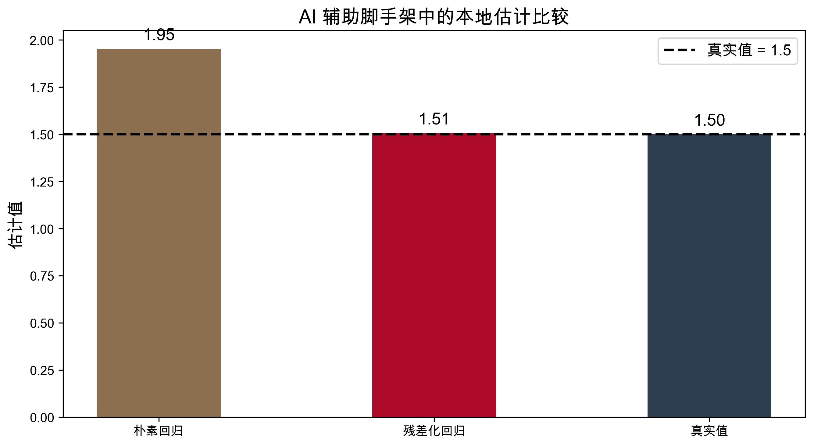

flowchart LR
A[研究问题] --> B[Estimand]
B --> C[DAG 与识别假设]
C --> D[数据审计]
D --> E[估计策略]
E --> F[稳健性检验]
F --> G[研究表达]
G --> H[可复现归档]
第十二讲：前沿专题——因果推断与 AI，大语言模型的应用
中国人民大学商学院
2026-06-09
双重机器学习
本节课的承接问题
核心转折
第十一讲解决的是 如何在高维控制下稳健估计。
第十二讲解决的是 如何组织一整套 AI-native research workflow。
一句话概括
AI 不是识别策略的替代品，而是研究 workflow 的放大器。
AI 最适合做的事
AI 不能替代的事
| 环节 | AI 可以高效协助 | 研究者必须把关 |
|---|---|---|
| 问题定义 | 生成候选 estimand 与变量清单 | 判定研究问题是否有因果含义 |
| 识别设计 | 列出假设与 DAG 草图 | 判断假设是否在制度上成立 |
| 数据处理 | 生成 EDA、清洗与特征工程脚手架 | 核对口径、样本选择与泄漏 |
| 估计推断 | 组织 DML、CATE、稳健性代码模板 | 审核模型选择与解释边界 |
| 写作表达 | 生成图表说明、报告框架与审稿清单 | 对结论负责并保证可复现 |
不是“随便写点提示词”
在研究场景里，vibe coding 指的是：
高水平 vibe coding 的四个约束
原始问题
“平台给商家发券，到底能不能提高长期留存？”
| 元素 | 结构化表达 |
|---|---|
| 处理变量 | 是否收到定向优惠券 |
| 结果变量 | 30 天后是否继续活跃 |
| 目标参数 | ATE 或 ATT |
| 主要混杂 | 商家历史销量、地区、类目、平台评级 |
| 识别风险 | 平台可能把券发给更有潜力的商家 |
典型错误
AI 很容易把“发券后的点击率”“发券后的曝光量”也加入控制变量。
这些变量发生在处理之后，属于 post-treatment variables。
正确做法
提示词最小充分上下文
数据审计不是机械清洗
课堂解读

| 中间件 | AI 可以生成 | 人类要检查 |
|---|---|---|
| 分析计划 | 研究流程、变量字典、检查清单 | 是否遗漏关键假设 |
| 代码脚手架 | 导包、建模模板、作图模板 | 是否存在样本泄漏、错误控制 |
| 报告草稿 | 图表说明、结果摘要、局限性模板 | 是否过度外推、是否把相关当因果 |
| 审稿清单 | 反问式 checklist | 是否覆盖识别、稳健性、外部效度 |
高价值用法
把 5 篇论文摘要整理成“研究问题—处理—结果—识别—数据—局限性”矩阵。
这样能快速看到哪些论文是随机实验、哪些是工具变量、哪些是 DML。
| 论文 | 处理 | 结果 | 估计对象 | 主要风险 |
|---|---|---|---|---|
| 平台补贴研究 | 补贴曝光 | 留存 | ATE | 自选择 |
| 培训项目评估 | 培训参与 | 工资 | ATT | 样本流失 |
| 信贷政策研究 | 政策覆盖 | 营收增长 | LATE | 外溢效应 |
LLM 最擅长的不是“下因果结论”
而是把文本、访谈、政策文件、客服记录整理成结构化变量。
典型任务
关键原则
正确姿势
让 AI 起草查询，再在本地数据库执行。
不要把大数据直接扔给 LLM，也不要让它在没有 schema 的情况下自由发挥。
推荐 workflow
| 任务 | AI 的高价值输出 | 研究者的终审重点 |
|---|---|---|
| Debug | 定位异常值、语法错误、维度不匹配 | 是否修坏了识别逻辑 |
| 审稿模拟 | 列出威胁识别的反对意见 | 哪些质疑需要新实验或新稳健性 |
| 结果解释 | 按模板说明 estimand、CI、边界条件 | 是否偷换结论、是否过度宣传 |
最危险的三种幻觉
课堂纪律
| 层级 | AI 更强 | 研究者更强 |
|---|---|---|
| 信息处理 | 摘要、归类、补全模板 | 提出问题、判断重点 |
| 代码原型 | 搭脚手架、重构、补文档 | 审核逻辑、设计测试 |
| 识别设计 | 罗列可能方案 | 判断制度背景与可信度 |
| 研究表达 | 生成初稿、图注、问答稿 | 负责叙事、边界与学术声誉 |
AI 时代的研究者
不只是会写回归代码，还要同时具备：
从“会跑数”到“会驾驭 workflow”
提示
本地分析工具
pandas：数据清洗与审计scikit-learn：交叉验证、基线模型、特征工程econml / DoubleML：因果估计Quarto：把分析、图表、解释合成一份可复现讲义提示
AI 协作工具
课程收官：项目答辩与研究展示
提示
最后的核心能力
真正的优势不是让 AI 替你做研究，而是让 AI 帮你更快地提出问题、验证问题，并把答案组织成可信证据。
Chernozhukov, V., Hansen, C., Kallus, N., Spindler, M., & Syrgkanis, V. (2024). Applied Causal Inference Powered by Machine Learning and AI. https://causalml-book.org/
Chernozhukov, V., Chetverikov, D., Demirer, M., Duflo, E., Hansen, C., Newey, W., & Robins, J. (2018). Double/Debiased Machine Learning for Treatment and Structural Parameters. The Econometrics Journal, 21(1), C1–C68.
Battocchi, K., Dillon, E., Hei, M., Lewis, G., Oka, P., Oprescu, M., Syrgkanis, V. (2019). EconML: A Python Package for ML-Based Heterogeneous Treatment Effects Estimation. https://econml.azurewebsites.net/
DoubleML Team. (2026). DoubleML Documentation. https://docs.doubleml.org/